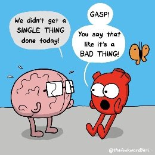

"Are you breathing just a little, and calling it a life?"
--Mary Oliver
Humans are required to lead some kind of productive life. We have to get things done. We have to achieve, finish, attain.
I mean let's go, already.
So we’re always looking for strategies and methods to get us to accomplish things, whether it’s getting more money, more acclaim, more fitness, cleaner closets, or more enlightenment.
I wish I could help. But I did pretty much nothing this past weekend, lying in bed and sleeping. Nothing got done- no exercise, no crossed-off to-do’s, no painting, no nuttin.
We shall call this, “Wasting My Time.”
Unproductive. Unmotivated. Useless.
Shhh, don’t tell Mary Oliver, OK? I don’t need that kind of judgment in my one wild and precious life.
I wonder though… does the story change if I say I had very minor surgery on Thursday? (No worries, I’m fine). See, then that same do-nothing behavior was actually healing, resting, intentional, and my doing-nothing was on purpose.
Ok, that’s allowed.
As long as unproductive behavior can be repackaged as service to some other kind of accomplishment such as rest, healing, or meditation, or as long as we can call it 'presence,' lolling in wildflower fields listening to the birds, then it's OK.
A weekend, a retreat, a vacation, maybe. For a short time.
Because sleep on the couch for 6 months with no obvious gain, no benefit, no contribution to society, no distinguishing this life from that of a slug- and after a while, we have a problem. After a while, we’re trying affirmations or reaching out to someone like the Mind-Tickler for sessions, in order to solve the obvious problem of, “What is wrong with me?”
In fact for many folks, non-productivity and non-motivation is a very strong source of depression, anxiety, self hatred, therapy, and motivational tapes.
No, sit around playing video games for “too long,” and then this life-gift is clearly wasted. And we mustn't waste.
We must pay for, earn, deserve, this breath, this heartbeat, this life.
I mean, if we don’t make some kind of useful action- then what are we doing even being alive? What’s the point? What’s the purpose? Why bother?
Just BEING is not enough.
Better get busy making something out of nothing. Pronto.
Because nothing is empty. Nothing is bad.
So get busy filling up that emptiness with action.
Luckily there’s always more to do. No one ever attains enough productivity.
And luckily there are many options for emptiness-filling. For instance, if we can’t prove our right to exist with useful action, then we can just fill up with evaluation and condemnation of our personhood, our self.
At least fill existence with feeling bad about our not-good-enoughness. Of course we’re still not getting enough done, but at least we feel bad about it.
Which makes us appear to be a better person.
Not to mention that in order to judge our own productivity and motivation, we have to look back at ourselves, as if outside ourselves, to evaluate how we’re doing.
Using productivity as a mirror to prove the self’s existence.
Through the mirror we know ourselves. Through the reflection, we know we are there. Getting things done reflects the me.
Productivity tells us how to see ourselves.
Never mind that it’s not possible to see ourselves. It’s not possible to be both the seer and the seen, the evaluator and the evaluated.
So, fine, we'll just pretend.
All of which is why the only-humans requirement to be productive isn't ever going to go away. It’s built in. The sense of being a doer, or a non-doer, or a should-be-a-doer, is firmly established.
So whether we busy ourselves with to-do lists forever, or retire with no plans, or waste time on the couch doing absolutely nothing we’re supposed to do,
Or we harangue ourselves forever that we’re not doing enough, call that “something wrong” and try to fix it.
Still…
We were born.
Approved or not, earned or not,
we already exist.
Unless existence is stupid, that wasn’t an error.
Which means even the useless drooling on the couch me still provides existence with a unique, one-of-a-kind experience.
Which means every one of us is already earning our right to be.
Just by being alive.
Getting stuff done or not.
Which may be a very different way of thinking.
And might feel weird.
Yet still could be anyway, that our unproductive, unspecial, unaccomplished, not-doing-enough life,
Actually is enough,
And that it’s simply not possible
To waste it.
Click to get your Mind-Tickled every week: http://eepurl.com/bQJg9v
